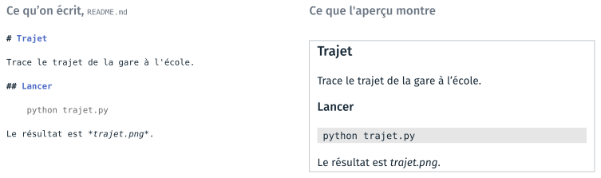
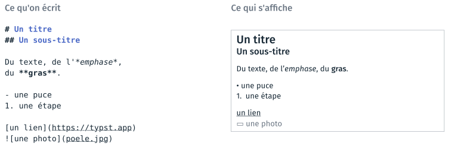
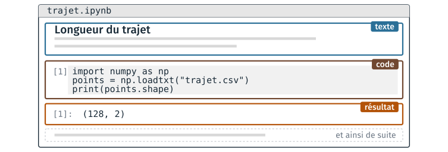

Markdown et notebook#
Cette partie présente les fichiers texte d’un projet autres que le code, puis Markdown, le format dans lequel s’écrit sa documentation. Elle décrit ensuite le notebook, un document qui réunit du texte écrit en Markdown, du code et les résultats de ce code, et la façon de l’ouvrir dans JupyterLab. Deux TD l’accompagnent, le TD 3a et le TD 3b ; ils sont présentés en fin de page.
Les fichiers texte d’un projet#
Un projet ne contient pas seulement du code. Ses réglages et sa documentation sont aussi des fichiers texte, qui s’ouvrent dans le même éditeur que le code, se comparent ligne à ligne et se versionnent de la même façon. Sur un projet réel, ces fichiers sont souvent plus nombreux que les fichiers de programme.
Fichier |
Ce qu’il contient |
Qui le lit |
|---|---|---|
|
les instructions du programme |
l’interpréteur |
|
la documentation, les notes, le |
un humain |
|
les réglages du projet et la liste de ses dépendances |
un outil |
|
un petit jeu d’essai, pour vérifier que le programme fonctionne |
un programme |
Le README.md est le fichier que l’on ouvre en premier dans un projet : il
dit ce que fait le projet et comment le lancer. La suite de la partie porte
sur le format .md dans lequel il s’écrit ; les fichiers .toml et .yml
sont traités à la partie 4.
Avertissement
Les données de travail ne font pas partie des fichiers du projet. Elles sont
stockées dans un autre dossier, et le programme les lit par un chemin de
fichier. Le projet ne contient qu’un petit jeu de données, de quelques lignes,
qui sert à le tester. Un relevé de plusieurs centaines de mégaoctets, une
image ou un classeur .xlsx placés dans un dépôt versionné (cours 2) ne se
comparent pas ligne à ligne, et alourdissent définitivement l’historique du
dépôt.
Le format de la documentation#
Un fichier .txt ne porte aucune mise en forme : ni titre, ni liste, ni
emphase. Un document .odt ou .docx en porte une, mais c’est un fichier
binaire, qui ne se compare pas ligne à ligne et ne s’ouvre pas dans l’éditeur
de code. Markdown est un format intermédiaire : un fichier texte dans
lequel quelques signes indiquent la mise en forme. L’éditeur affiche, dans un
aperçu, le document mis en forme.

Le même README.md, tel qu’il est écrit et tel que l’aperçu l’affiche.#
Markdown offre moins de possibilités de mise en page qu’un traitement de texte. Il permet en échange d’écrire la documentation dans l’éditeur de code, de la comparer ligne à ligne, de la versionner, et de la convertir dans un autre format quand il le faut. Le tableau compare les trois façons d’écrire un document.
|
|
|
|
|---|---|---|---|
Titres, listes, emphase |
aucun |
marqués par des signes dans le texte |
enregistrés dans des balises XML |
Lisible sans logiciel dédié |
oui |
oui |
non |
Comparaison ligne à ligne |
oui |
oui |
non |
Mise en page fine |
non |
non |
oui |
Usage |
note rapide, sortie d’un programme, relevé |
|
rapport à rendre, charte graphique imposée |
Un rapport à rendre en PDF peut être écrit en Markdown : le programme pandoc
produit un PDF à partir d’un fichier .md. L’auteur perd le contrôle fin de
la mise en page, et garde un fichier source qu’il peut relire, comparer et
versionner. Le format .txt reste celui des sorties de programme et des
relevés, où une structure de titres et de listes n’aurait pas d’usage.
L’intention de Markdown#
John Gruber publie Markdown en mars 2004, sur son site Daring Fireball,
avec Aaron Swartz pour seul testeur ; la notation des titres par # vient
d’atx, un format de Swartz. Gruber énonce ainsi le but de Markdown : un format
de texte facile à lire et à écrire, convertible en HTML, et dont un document
peut être publié tel quel, en texte brut, sans avoir l’air balisé. Sa source
d’inspiration principale est le courriel en texte brut.
Le même contenu s’écrit ainsi en Markdown et en HTML :
# Crêpes
*1 heure de repos.*
1. Mélanger la farine
2. Casser les **œufs**
<h1>Crêpes</h1>
<p><em>1 heure de repos.</em></p>
<ol><li>Mélanger la farine</li>
<li>Casser les <strong>œufs</strong>
</li></ol>
Une fois converti en HTML, le fichier Markdown s’affiche dans un navigateur comme le fichier HTML ; avant conversion, il est le seul des deux qui se lise facilement. La contrainte de départ de Markdown est que la source reste lisible sans conversion ; ses limites, comme l’absence de mise en page fine, découlent de cette contrainte.
Note
La description de Gruber laissait des cas ambigus, que les outils de conversion interprétaient de façons différentes. Depuis 2014, la spécification CommonMark fixe la syntaxe de Markdown et fournit une suite de tests. Un même fichier peut encore s’afficher un peu différemment d’un outil à l’autre, quand l’un d’eux est antérieur à CommonMark ou ajoute ses propres extensions.
La syntaxe de Markdown#
Une dizaine de marques suffisent pour écrire un document, et chacune se comprend sans que le texte soit rendu : le dièse annonce un titre, le tiret une puce, les astérisques une emphase.

Les marques courantes de Markdown, et leur affichage.#
La syntaxe complète est décrite par Gruber sur daringfireball.net/projects/markdown/syntax. Deux marques absentes du schéma servent au TD 3a. Un tableau s’écrit avec des barres verticales entre les colonnes, et une ligne de tirets sous la ligne d’en-tête ; l’alignement des barres d’une ligne à l’autre n’est pas obligatoire. Un bloc de code s’écrit entre deux lignes de trois accents graves ; le nom du langage, écrit juste après les trois premiers accents graves, permet à l’aperçu de colorer le code.
| Ingrédient | Quantité |
|---|---|
| farine | 250 g |
| œufs | 4 |
Un lien et une image s’écrivent de la même façon, avec un point
d’exclamation devant l’image. L’image n’est pas enregistrée dans le fichier
.md : elle y est désignée par son chemin, relatif au dossier du fichier
.md, et elle reste un fichier séparé.  suppose
ainsi que poele.jpg se trouve dans le même dossier que le document. Les
chemins relatifs sont ceux de la partie 1.
Avertissement
Deux erreurs de syntaxe sont fréquentes. Une ligne vide sépare deux
paragraphes : deux lignes consécutives sans ligne vide entre elles forment un
seul paragraphe dans l’aperçu. Le dièse d’un titre est suivi d’une espace :
#Titre s’affiche comme du texte ordinaire, et non comme un titre.
Un bloc de code dont le langage est mermaid décrit un diagramme en texte,
que l’aperçu de l’éditeur dessine sous forme de boîtes et de flèches. Le bloc
suivant décrit trois boîtes, « Pâte », « Repos, 1 h » et « Cuisson », reliées
par deux flèches :
```mermaid
flowchart LR
A[Pâte] --> B[Repos, 1 h]
B --> C[Cuisson]
```
Le fichier ne contient que ces lignes, et le dessin est calculé à l’affichage, comme la coloration du code. Un diagramme ainsi écrit se compare ligne à ligne, se versionne et se corrige sans logiciel de dessin. La syntaxe est décrite sur mermaid.js.org/syntax/flowchart.html.
L’éditeur de code prend en charge Markdown sans extension à installer.
Ctrl + K puis V ouvre l’aperçu à côté du fichier, et le met à jour
pendant la frappe ; Ctrl + Maj + V ouvre l’aperçu seul, dans un onglet.
L’aperçu ne modifie pas le fichier : ce qui est enregistré reste le texte
tapé.
Programmation littérale#
Dans un projet, le code est d’ordinaire dans un fichier, son explication dans un autre, et son résultat n’est enregistré nulle part. Un notebook, ou carnet, réunit les trois dans un seul document, dans l’ordre du raisonnement : des blocs de texte, des blocs de code, et sous chaque bloc de code le résultat de son exécution.

Les trois sortes de blocs d’un notebook, dans l’ordre où ils sont écrits.#
L’idée d’écrire un programme comme un texte explicatif, dans lequel le code s’insère à l’endroit où il est expliqué, est due à Donald Knuth, qui l’a nommée programmation littérale (literate programming) en 1984. Knuth propose de considérer les programmes comme des œuvres de littérature, écrites pour être lues par des humains autant que pour être exécutées par une machine.
Le résultat de chaque bloc de code est enregistré dans le fichier du
notebook. Rouvert le lendemain, le notebook affiche encore ce que le code a
produit la veille, sans avoir été exécuté de nouveau : un notebook se lit
ainsi sans l’exécuter. Le fichier .ipynb est un fichier texte au format
JSON, dans lequel chaque cellule porte son code, son numéro d’exécution et
ses résultats. La cellule suivante construit le contenu d’un notebook d’une
seule cellule, et l’affiche au format JSON :
import json
notebook = {
"cells": [
{"cell_type": "code",
"execution_count": 1,
"metadata": {},
"source": ["print('bonjour')"],
"outputs": [{"output_type": "stream", "name": "stdout",
"text": ["bonjour\n"]}]},
],
"metadata": {"kernelspec": {"name": "python3"}},
"nbformat": 4, "nbformat_minor": 5,
}
print(json.dumps(notebook, indent=1))
{
"cells": [
{
"cell_type": "code",
"execution_count": 1,
"metadata": {},
"source": [
"print('bonjour')"
],
"outputs": [
{
"output_type": "stream",
"name": "stdout",
"text": [
"bonjour\n"
]
}
]
}
],
"metadata": {
"kernelspec": {
"name": "python3"
}
},
"nbformat": 4,
"nbformat_minor": 5
}
Ce fichier est produit par l’application qui affiche le notebook, et n’est
pas destiné à être modifié à la main. Les résultats enregistrés, y compris
les images, codées en texte, rendent un .ipynb lourd,
et deux exécutions du même notebook produisent des fichiers qui diffèrent sur
de nombreuses lignes, alors que le code n’a pas changé. Un .ipynb se
versionne donc mal.
Note
Un notebook peut aussi s’écrire en MyST Markdown : les blocs de texte sont du
Markdown, les cellules de code des blocs ```{code-cell}, et les résultats
sont recalculés à chaque construction au lieu d’être enregistrés. Le fichier
reste lisible et se compare ligne à ligne. Cette page est écrite dans ce
format, et la sortie de la cellule précédente a été calculée à la
construction du site.
Le notebook sert à explorer des données et à expliquer une démarche. Il ne
convient pas pour livrer un outil qui doit s’exécuter seul, du début à la
fin : le code d’un tel outil s’écrit dans un script .py, sujet du
cours 3. Le tableau situe le notebook parmi les façons d’exécuter du Python vues depuis le TD 2a.
Forme |
Usage |
Limite |
|---|---|---|
Interpréteur interactif ( |
essayer une ligne, faire un calcul |
rien n’est conservé |
Script ( |
un programme que l’on relance et que l’on versionne |
les résultats intermédiaires ne sont pas affichés |
Notebook ( |
explorer, documenter, présenter un résultat |
fichier lourd, difficile à versionner |
Le bloc de texte d’un notebook#
Le bloc de texte d’un notebook s’écrit en Markdown, avec la même syntaxe que
le README.md et le fichier du TD 3a. Le bloc suivant, par exemple :
# Longueur d'un trajet
Les points du trajet sont donnés en
**coordonnées projetées**, en mètres.
s’affiche avec le titre « Longueur d’un trajet » en grand, et les mots
« coordonnées projetées » en gras. Un bloc de texte a deux états : Maj +
Entrée affiche le texte mis en forme, et un double clic sur le bloc revient
au texte source. Cette alternance est celle de l’aperçu Markdown de
l’éditeur.
Un bloc de texte n’est transmis à aucun programme pour être exécuté :
l’application se contente de le mettre en forme. Pour cette raison, seuls les
blocs de code portent un numéro d’exécution, comme [1].
Un notebook dans JupyterLab#
JupyterLab est une application qui affiche et exécute des notebooks dans un onglet du navigateur. Sa fenêtre présente les trois sortes de blocs du schéma de la programmation littérale, dans l’ordre : le titre et le texte en haut, la cellule de code et son numéro, le résultat juste en dessous, puis le texte qui commente ce résultat. À gauche de la fenêtre, l’arborescence des fichiers montre le notebook à sa place dans son dossier, parmi les autres fichiers.
Le numéro entre crochets, [1], est le rang d’exécution de la cellule, et
non sa place dans le document. Une cellule exécutée une seconde fois prend le
numéro suivant, [2] par exemple. Des numéros qui ne se suivent pas du haut
vers le bas du document indiquent que les cellules ont été exécutées dans le
désordre.
Avertissement
Les cellules d’un notebook peuvent être exécutées dans n’importe quel ordre, et une cellule modifiée mais non exécutée n’a aucun effet. Un notebook qui donne le bon résultat sur le poste de son auteur peut ainsi en donner un autre quand il est exécuté du début à la fin sur un autre poste. Un notebook se partage après avoir été exécuté entièrement, depuis le début, ce que fait dans JupyterLab la commande Restart Kernel and Run All Cells du menu Kernel.
En haut à droite, JupyterLab affiche le nom du noyau, par exemple
Python 3 (ipykernel) : le programme qui exécute les cellules de code et
conserve leurs variables d’une cellule à l’autre. Le noyau se choisit à
l’ouverture du notebook ; ce choix est traité à la partie 4.
Lancer JupyterLab depuis Anaconda#
JupyterLab est livré avec la distribution Anaconda. Il se lance depuis la
page d’accueil d’Anaconda Navigator, par le bouton Launch de sa fiche,
comme l’éditeur de code au TD 2a. Le numéro affiché sous le nom de
l’application est la version installée. La commande jupyter lab, tapée dans
un terminal où l’environnement base d’Anaconda est actif, lance la même
application.
Le bouton de la fiche indique Launch, et non Install, parce que la
distribution Anaconda installe JupyterLab et ipykernel dans son
environnement base. Une installation de Miniconda ou de Miniforge part d’un
environnement base minimal, sans JupyterLab : la fiche indique alors
Install.
JupyterLab s’ouvre dans un onglet du navigateur, sur une adresse de la forme
http://localhost:8888/lab : la page affichée et le programme qui l’envoie au navigateur
sont tous deux sur l’ordinateur de l’utilisateur. La partie 4 explique cette
organisation en client et serveur.
TD de la partie#
TD 3a — Mettre en forme une recette en Markdown, 20 minutes : reprendre en Markdown un texte brut sans structure, avec l’aperçu ouvert à côté, pour décider ce qui est un titre, une étape ou une donnée.
TD 3b — Le notebook, ouvert de trois façons, 12 minutes : ouvrir le même notebook dans le navigateur, dans l’éditeur et dans JupyterLab, et constater ce que le noyau retient d’une cellule à l’autre.
Les TD des autres parties sont dans Travaux dirigés de la séance 1.